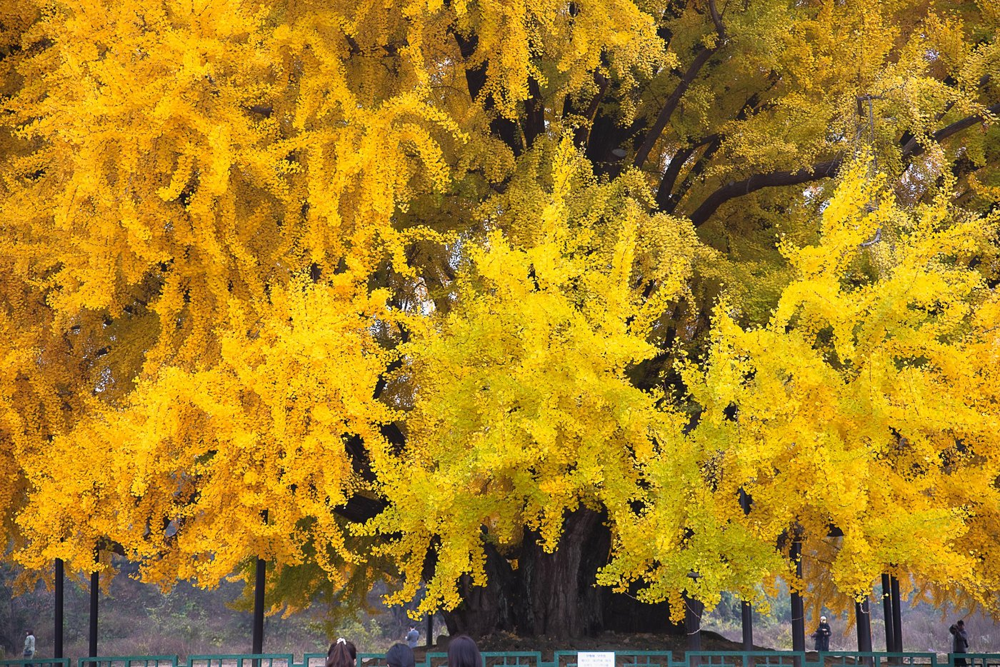
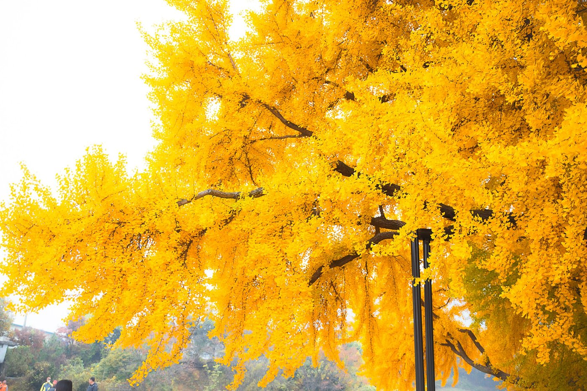
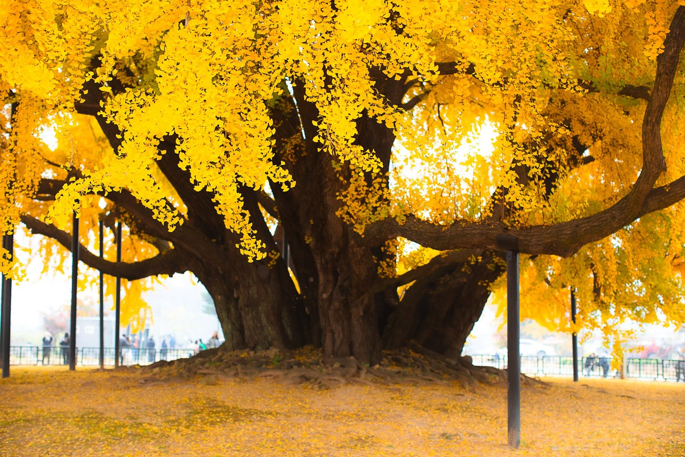
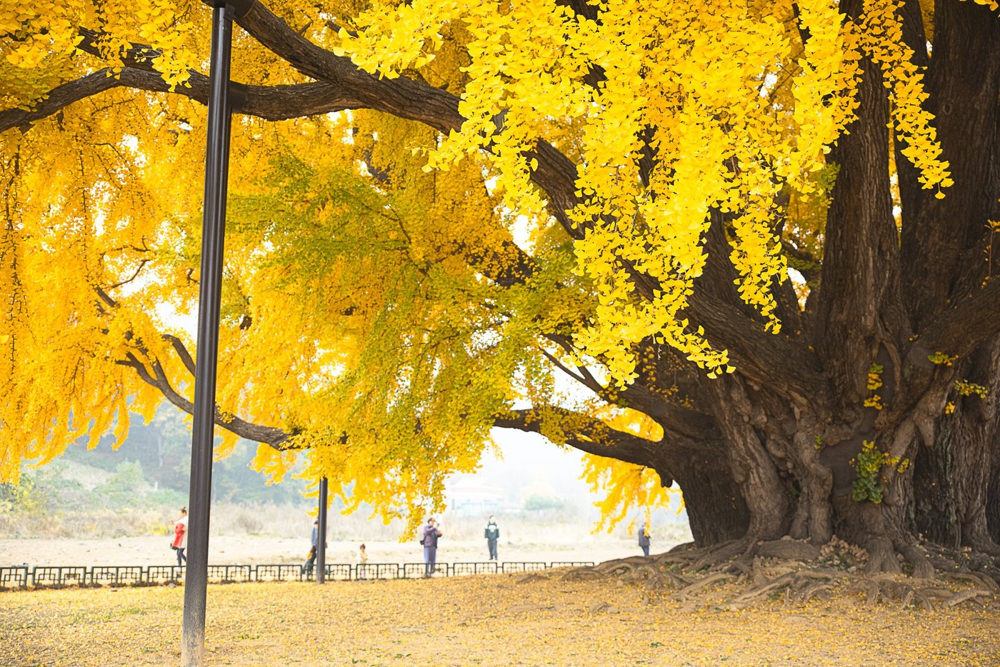
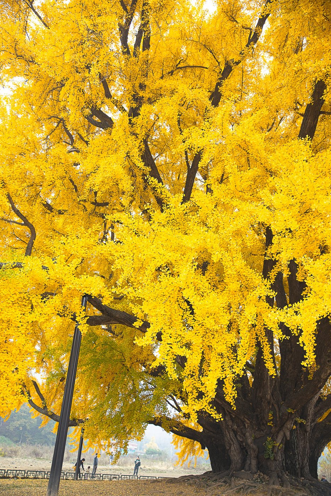
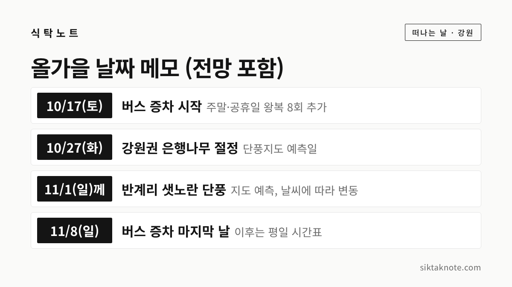
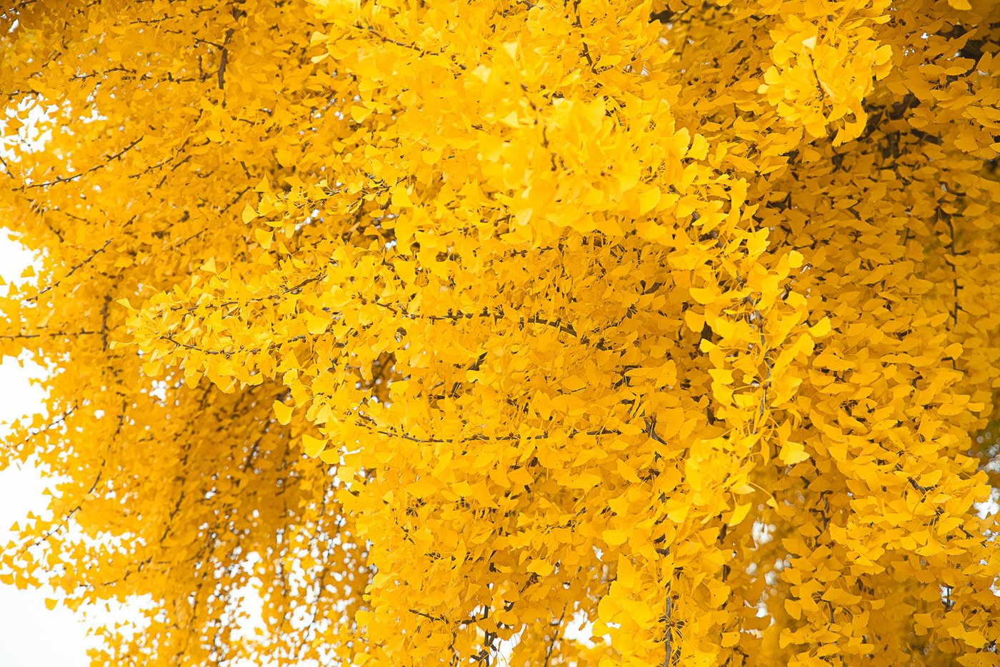

원주 반계리 은행나무 2026 — 단풍 시기, 축제 소식, 버스와 주차 안내

3줄 요약
- 올해 반계리 은행나무는 10월 말이나 11월 1일께 샛노랗게 물들 것으로 전망되는데요. 한국관광공사와 산림청 국립수목원의 단풍지도를 인용한 10월 8일 보도 기준입니다.
- 10월 17일부터 11월 8일까지 주말과 공휴일에는 공영버스 1번 노선이 왕복 8회 늘어납니다.
- 올해 축제의 날짜와 프로그램은 확인하지 못했어요. 3월 보도에는 2주로 늘리는 방안을 추진한다고 나옵니다.
행사 정보
- 위치
- 강원특별자치도 원주시 문막읍 반계리 (내비게이션에 '반계리 은행나무'로 검색)
- 지정
- 천연기념물 제167호 (1964년 지정)
- 규모
- 높이 32m, 가슴높이 둘레 16.27m (원주시 사업을 전한 보도)
- 수령
- 오랫동안 800년쯤으로 알려졌고, 2024년 국립산림과학원 측정에서 1,317년(±50년)으로 추정 (보도)
- 올해 단풍 전망
- 이달 말 또는 11월 1일께 (2026 단풍지도 인용, 강원일보 10월 8일)
- 올해 축제
- 날짜와 프로그램은 확인하지 못했어요. 3월 보도에는 2주로 확대 추진
- 버스
- 10월 17일~11월 8일 주말·공휴일 공영버스 1번 노선 왕복 8회 증차 (평일 12회 유지)
- 관람·주차
- 상시 개방, 입장료와 주차 무료 (관광 안내 사이트 기재)
2026.10.15 확인 기준. 올해 축제의 날짜·장소·프로그램, 주차 면 수, 광장 화장실 위치, 버스 시간표는 공식 자료로 확인하지 못했어요. 가기 전에 원주시 관광 누리집과 원주시시설관리공단 공지를 한 번 더 확인하세요.
원주 문막읍 반계리에는 가을마다 노란 은행잎을 보려는 사람들이 모여드는 나무가 한 그루 있습니다. 천연기념물 제167호 반계리 은행나무인데요. 올해는 언제쯤 물드는지, 축제가 있는지, 차는 어디에 대면 되는지를 10월 15일 기준으로 확인해 봤어요. 확인한 것은 출처와 함께 적고, 확인하지 못한 것은 못 했다고 적었습니다.
올해 축제 소식은 아직 확인하지 못했어요
단풍철이면 축제 소식이 궁금해지는데요. 먼저 지난해 이야기부터 하겠습니다. 반계리 은행나무 축제는 지난해 11월 2일 은행나무광장에서 열렸어요. 보도에 따르면 풍물 공연과 난타, 무용, 원주시립교향악단 금관 앙상블, 단풍음악회, 기획사진전, 소원지 쓰기와 캘리그라피 같은 체험이 있었어요.
올해는 3월 보도에서 하루였던 축제를 2주로 늘리는 방안을 원주시가 추진한다고 전했습니다. 지역 단체장과 이장 등 16명이 축제위원회를 꾸렸고, 주민이 직접 참여하는 먹거리 장터를 계획한다고 합니다. 다만 올해 축제의 날짜와 장소, 프로그램은 찾아본 언론 보도와 공식 자료에서 확인하지 못했어요. 열린다고 단정해서 쓸 수는 없는 상태예요.
그래서 축제를 보고 싶으시다면 출발 전에 원주시 관광 누리집이나 원주시청 공지를 꼭 확인하시기 바랍니다. 이 글도 새 소식이 확인되는 대로 고치겠습니다.
천연기념물 제167호 반계리 은행나무
반계리 은행나무는 1964년에 천연기념물 제167호로 지정되었습니다. 한국학중앙연구원의 문화유산 자료에는 지정일이 1964년 1월 31일로 나와 있어요. 높이는 32m, 가슴높이 둘레는 16.27m예요. 보도마다 수치가 조금씩 달리 나오는데요. 원주시의 명소화 사업을 전한 보도와 지역 신문이 쓴 값을 따랐어요.

사진처럼 가까이서 보면 줄기가 굵고, 큰 가지 아래를 쇠기둥이 받치고 있는 모습도 보입니다.

나이는 약 1,300살, 그리고 마을 이야기
이 나무는 오랫동안 800살쯤으로 알려져 왔습니다. 그런데 2024년 국립산림과학원이 측정한 결과 수령이 1,317년으로 추정된다는 보도가 나왔어요. 한 보도는 오차 범위가 ±50년이라고 전했고, 기사에 따라 1,318년으로 쓰기도 해서 '약 1,300년' 정도로 보시면 되겠습니다.

마을에는 이런 이야기가 전해지고 있습니다. 옛날에 한 대사가 지나가다 물을 마시고 지팡이를 꽂아 두고 갔는데 그 지팡이가 자란 나무라는 이야기가 있어요. 마을 사람들이 나무에 큰 흰 뱀이 산다고 믿어 신성하게 여기고 손을 대지 않았다는 이야기도 있죠. 가을에 단풍이 한꺼번에 들면 이듬해 풍년이 든다는 말도 전해집니다. 모두 전해 내려오는 이야기여서 사실인지는 알 수 없어요.


언제쯤 노랗게 물들까요
원주시시설관리공단은 반계리 은행나무를 찾는 사람이 매년 10월 중순부터 11월 초까지 많다고 설명했습니다. 올해 전망은 10월 8일 강원일보가 전했는데요. 한국관광공사와 산림청 국립수목원의 '2026 단풍지도'를 인용해 반계리 은행나무가 이달 말 또는 11월 1일께 샛노랗게 물들 것으로 예상했습니다. 강원권 기준 은행나무 절정은 10월 27일로 예측되었어요.

지도 예측이어서 날씨에 따라 며칠은 달라질 수 있습니다. 지난해에는 10월 23일에 막 노랗게 변하기 시작했고 절정은 11월 초로 내다본다는 보도가 있었어요. 오늘 현재 올해 나무가 얼마나 물들었는지는 보도를 찾지 못했어요. 이번 주말에 가시는 분은 아직 덜 물들었을 수 있다는 점을 생각해 두시면 좋겠습니다.

가는 길과 버스, 주차
주소는 원주시 문막읍 반계리이고, 내비게이션에는 '반계리 은행나무'를 입력하시면 됩니다.
단풍철에는 길이 막히는 일이 많은데요. 2021년 원주시의 명소화 계획을 전한 보도에는 평소 1분이면 지나는 구간이 30분 넘게 막히기도 한다고 나옵니다. 올해는 주말에 이용할 버스가 늘었습니다. 원주시시설관리공단이 10월 17일부터 11월 8일까지 주말과 공휴일에 공영버스 1번 노선을 왕복 8회 더 운행한다고 합니다. 평일은 12회 그대로예요. 노선은 문막읍행정복지센터에서 출발해 반계리 은행나무를 지나 대둔리까지 갑니다. 보도에는 출발 시각이 나와 있지 않아서 시간표는 공단 공지로 확인하셔야 합니다. 원주 시내에서 문막읍행정복지센터까지 가는 방법도 확인하지 못했어요.
주차는 2025년 9월 은행나무광장이 준공되면서 무료 주차장이 새로 생겼다고 알려져 있습니다. 다만 면 수가 보도에 따라 135대, 170면으로 달라서 정확한 숫자는 확인하지 못했어요. 단풍이 절정일 때 주차장이 얼마나 붐비는지도 확인된 자료가 없어요. 주말 낮에는 일찍 출발하시거나 버스를 이용하는 쪽이 마음 편할 것 같습니다.
관람 시간과 광장 시설
관광 안내 사이트에는 상시 개방, 연중무휴, 입장료 무료로 적혀 있습니다. 은행나무 둘레에는 초록색 보호 울타리가 둘러져 있어요.

은행나무광장은 잔디광장이 1만 6,200여㎡이고, 보행자 전용도로와 야외무대가 만들어졌다고 합니다. 3월 원주투데이 보도 기준이에요. 광장에 화장실이 있는지, 어디에 있는지는 공식 자료로 확인하지 못했어요. 사진에 건물이 보이긴 하는데 무슨 건물인지는 알 수 없어요.
문막에서 함께 가 볼 곳
소금산 그랜드밸리가 있는 간현관광지가 가까운 편입니다. 원주시가 2021년에 은행나무를 간현관광지와 연계하겠다고 밝힌 적이 있어요. 소금산 그랜드밸리에는 출렁다리와 울렁다리, 소금잔도가 있습니다. 관광 안내 사이트에는 매주 월요일이 휴무라고 나와 있으니 월요일은 피하시는 게 좋겠습니다. 요금은 코스마다 다르고 바뀔 수 있어서 공식 누리집에서 확인해 주세요. 반계리에서 차로 얼마나 걸리는지는 확인하지 못했으니 지도 앱으로 재 보시기 바랍니다.
원주 시내에서는 10월 23일부터 25일까지 원주 만두축제가 열릴 예정이에요.
가기 전에 확인할 것
이 글을 쓰며 확인하지 못한 것을 한 번에 적어 둡니다. 올해 축제의 날짜와 프로그램, 주차장 정확한 면 수, 광장 화장실 위치, 주말 버스 시간표, 오늘 현재 단풍이 든 정도입니다. 이 가운데 축제와 버스는 원주시 관광 누리집이나 원주시시설관리공단 공지에 올라오면 가장 정확합니다.
단풍 시기를 다른 지역과 견주어 보고 싶으시다면 2026 단풍 절정 시기 글을, 은행나무 이야기가 더 궁금하시다면 용문사 은행나무 전설 글을 함께 보시면 좋겠습니다. 은행을 구해 오셨다면 은행 손질·보관법도 도움이 될 거예요.
이 글은 2026년 10월 15일 기준입니다.